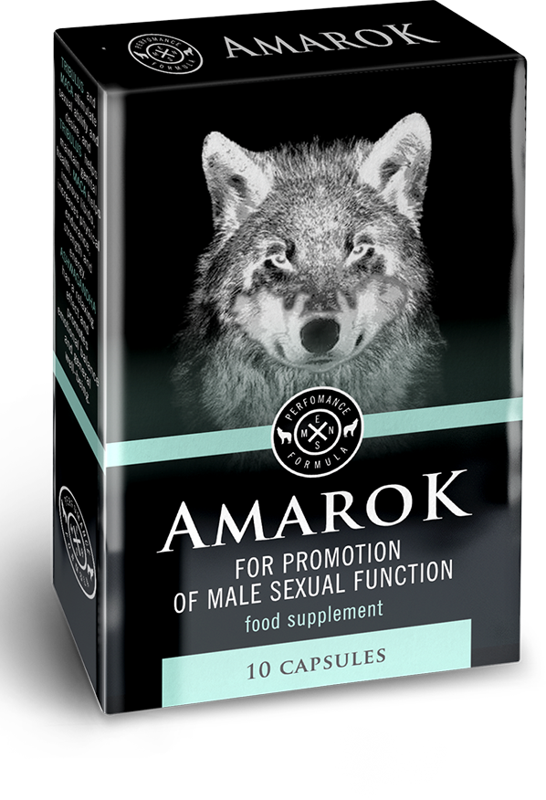

27.01.2020
Ισχυρή δραστικότητα 2: η επιστροφή της σεξουαλικής δραστηριότητας
Λίγο για εμένα
Γεια σε όλους! Είμαι ο Μάρκος, είμαι 43 ετών, και εγώ λατρεύω το σεξ. Λατρεύω τόσο πολύ, που η σύζυγός μου και εγώ κάνουμε σεξ σε όλα τα πιθανά μέρη: ασανσέρ, αποδυτήρια, παραλία, αεροπλάνο, κινηματογράφος, στέγη πολυκατοικίας, ξενοδοχείο κ.α. Ευτυχώς, τώρα προσθέτουμε συνέχεια στον κατάλογο των ασυνήθιστων τόπων, αν και πριν από έξι μήνες κόντευα να γινώ ανίκανος.

Πώς ξεκίνησαν όλα
Η πρώτη αποτυχία συνέβη, όταν ξεπέρασα όρια με αλκοόλ. Αλλά δεν αντιδράσαμε σαν είναι πρόβλημα, απλα γελάσαμε και πήγαμε για ύπνο. Την επόμενη μέρα η ίδια ιστορία, αν και δεν ήμουνα καθόλου μεθυσμένος. Νόμιζα, ότι θα μπορούσε να είναι οτιδήποτε, αλλά όχι ανικανότητα.
Είχαμε αποχή για μερικές ημέρες, σίγουρα θα έπρεπε να βοηθήσει, έρχεται το πολυαναμενόμενο βράδυ του παθιασμένου ζωικού σεξ και ... αποτυχία, το πέος δεν κουνήθηκε καθόλου.
Ο εγκέφαλος αρνιόταν ότι συνέβαινε και έψαχνε δικαιολογίες, με κάθε τρόπο σε αυτή την ηλικία, δεν ήμουν ο μόνος που αντιμετώπισα αυτό το πρόβλημα. Ρώτησα από όλους τους φίλους μου, τι γίνεται εκεί σε προσωπική ζωή τους. Νόμιζα ότι κανείς δεν θα μου έλεγε για τις προσωπικές σχέσεις τους, γιατί η ηλικία είναι ήδη τέτοια… Αλλά όχι, και τι δεν έχω ακούσει. Εν συντομία: ένας έχει μια σύζυγο και μερικές εραστές, ένας άλλος διοργανώνει ομαδικό σεξ κάθε Σάββατο, ο τρίτος προσπάθησε να μπει στη βιομηχανία πορνό, αλλά η σύζυγός του απότρεψε να γίνει αυτό, ο άλλος γιόρτασε τα πενήντα γενέθλιά του με έξι πόρνες και πρόσθεσε, ότι θα μπόρεσε και με τις 10.
Άκουγα τότε διάφορα, και λοιπόν πίστευα, ότι αυτό είναι κατά πιθανότατα μια προσωρινή αναστάτωση και μετά όλα θα είναι καλά. Αλλά όλες οι προσπάθειες για να κάνουμε σεξ τελείωναν με αποτυχία.
Η σύζυγός μου ήταν στεναχωρημένη, φώναζε ότι ήρθε η ώρα να παραιτηθεί ο καπετάνιος μου. Μετά το βράδυ έφερε το Βιάγκρα και είπε, ότι πολλοί συνταξιούχοι πίνουν αυτή τη αηδία και πρέπει και εγώ το ίδιο να κάνω. Με πείραξε αυτό και επίτηδες τότε ήπια ένα χάπι.
Αυτό ενέργησε. Μόνο το πέος σηκώθηκε στα μισά του δρόμου του. Με κάποιο τρόπο μπήκε, κουνήθηκε μέσα, δεν μπόρεσα να τελειώσω. Αλλά δεν μπόρεσα, επειδή το κεφάλι μου είχα πονοκέφαλο, είχα θόλωση και εμετό. Από εκείνη τη στιγμή, αποφάσισα να μην παίρνω ποτέ αυτή τη χημεία.
Ζήτησα μια συμβουλή

Θυμάστε, εγώ έλεγα για έναν άνδρα, που κάλεσε έξι πόρνες σε επέτειο του; Έτσι, αποφάσισα να τον ρωτήσω πώς όλα σ ’αυτόν ακόμα λειτουργεί. Αυτός γέλασε, ρώτησε αν έχω εγώ κάποια προβλήματα με αυτό. Αρνήθηκα, εγώ έλεγα, ότι απλα ενδιαφέρομαι.: Αυτός μου είπε: 'Λοιπόν, βέβαια, δεν υπάρχει τίποτα τέτοιο, έχω περάσει και εγώ από όλα αυτά.Έτρεχα στα φαρμακεία, πέρασα από όλα τα φόρουμ και βρήκα ένα πράγμα, που με βοήθησε'.
Δεν τολμούσα να τον ρωτήσω άμεσα, θα υποψιαστεί κάτι, αλλά αυτός μου είπε όλα:
Ονομάζεται αυτό , μπορεί να έχεις ακούσει για αυτό.Αν όλα είναι πολύ χάλια, πίνεις μια κάψουλα το μεσημέρι και το βράδυ.Μετά από λίγες μέρες, θα ξαφνιαστείς από το αποτέλεσμα.Εάν αποφασίσεις να το αγοράσεις, σου προειδοποιώ αμέσως: πρέπει να λάβεις μια ολόκληρη αγωγή, για να στερεώσεις αποτέλεσμα.
Μετά από την αγωγή, θα ξεχάσεις τι είναι η ανικανότητα. Με γνωρίζεις για πολύ καιρό, δεν θα παίρνω διάφορα χαζά. Γι’ αυτό το λόγο καν’ το, μέχρι το τρένο δεν έφυγε από σένα.
Μου έδωσε το σύνδεσμο, όπου μπορείτε να πάρετε εκείνο το , έτσι ώστε να μην σας κοροϊδέψουν με παράδοση και να μην σας στείλουν απομίμηση. Εκεί αμέσως και αγόρασα μερικά τεμάχια.
Άρχισα να πίνω , όπως μου είπε ο φίλος μου - μια κάψουλα το πρωί, μια κάψουλα το βράδυ, γιατί σε μένα όλα ήταν χάλια.
Η γυναίκα μου αστειευόταν όλη αυτή τη ώρα, έλεγε με ποιον άραγε θα κάνει σεξ τώρα, άρχισε να μιλάει για τους εραστές και ρώταγε, πώς θα αντιδράσω εγώ σε αυτό το θέμα. Αυτή δεν ήξερε, τι της περίμενε μπροστά.
Λίγες μέρες αργότερα το πρωί αισθάνθηκα μια καλή στύση. Νομίζω, ότι θα της δείξω, ποιος είναι εδώ ο εραστής της. Εκείνο το βράδυ έχω κανονίσει τα πάντα ετσι, ώστε θέλω να προσπαθήσω ξανά, ίσως αυτή τη φορά θα σηκωθεί.
Αυτή ούτε έκανε προσπάθεια να βγάλει τα ρούχα της, είπε, ότι δεν έχει νόημα να χάνει χρόνο. Γαϊδούρα ήταν, θα δει τώρα. Στα πρώτα δευτερόλεπτα των πρελούδιων, σηκώθηκε σ’ έμενα έτσι, ώστε όχι μόνο αυτή, αλλά και εγώ, μείναμε άφωνοι. Ούτε χρειάστηκε να κάνει πολλές ερωτήσεις, αυτή έριξε όλα τα ρούχα της.
Κάναμε σεξ για περίπου 5 ώρες. Αυτή φώναζε ετσι, που ακούστηκε στα αυτιά μου. Μετά το σεξ, ρώτησε τι κόλπο ήταν αυτό. Ομολόγησε, ότι ακόμα κι αν κάναμε σεξ συχνά πριν, αλλά δεν υπήρχε θέμα ποιότητας καθόλου. Αυτή είχε οργασμούς πολύ σπάνια και τώρα, για μια φορά, όπως το είπε, για ένα μάθημα, είχε οργασμό 6 φορές.
Αυτό το σεξ ήταν το ακριβές σημείο εκκίνησης. Μετά από αυτό, κάνουμε σεξ κάθε μέρα, η σχέση μας έγινε τέλεια. Δεν μαλώνουμε, δεν καυγαδίζουμε, λύνουμε όλα τα προβλήματα μέσα στο κρεβάτι.
Όλη αυτή η ευτυχία εμφανίστηκε χάρη στην αγωγή με το . Ποιος ενδιαφέρεται, αφήνω ένα σύνδεσμο. Εκπλήσσετε τις γυναίκες και τις ερωμένες σας.
Όλοι ξέρουν από καιρό, ότι εάν υπάρχουν προβλήματα με τη δραστικότητα, τότε δεν κάνει να πιείς Βιάγκρα σε καμία περίπτωση. Αν και το πέος θα σηκωθεί, τότε όχι για πολύ χρόνο. Υπάρχει κίνδυνος να μείνεις ανίκανος μέχρι το τέλος της ζωής σου, κανένας γιατρός δεν θα βοηθήσει.
Υποστηρίζω, κάποτε χρειάστηκε να πάρω ένα χάπι αυτής της αηδίας, ως αποτέλεσμα έπαψε να στέκεται καθόλου. Έτρεχα σε πολλούς γιατρούς, με έσωσε μόνο . Μου ένας γιατρός πρότεινε, λέει, και αυτός ο ίδιος το έπινε σε μια αγωγή για την υγεία του.
Το σκεύασμα σίγουρα είναι το καλύτερο, ανάμεσα σε όλα που υπάρχουν στην αγορά. Ιδιαίτερα προβλήματα με στύση δεν είχα, απλά μου έφτανε για ένα δυο πυροβολισμούς ανά βράδυ. Μετά από την αγωγή που έκανα, τέτοιο πρόβλημα δεν έχω, μπορώ και 10 φορές να έχω οργασμό, μόνο πολύ κουράζομαι.
Είμαι 54 ετών. Αντιμετώπισα την κακή στύση περίπου πριν από ένα χρόνο. Πήγαινα στον γιατρό ουρολόγο σχεδόν δύο μήνες, μετά και στον ανδρολόγο. Η στύση εμφανίστηκε, αλλά είναι πολύ αδύναμη. Σηκωνότανε, όπως λένε, στα μισά. Πείτε μου, στη δική μου περίπτωση θα βοηθήσει;
Χωρίς αμφιβολία, λειτουργεί για όλους το ίδιο. Στο υπάρχουν μόνο φυσικά εκχυλίσματα, που επηρεάζουν θετικά σε ολόκληρο το ανδρικό οργανισμό. Αυξάνουν την λίμπιντο, την παραγωγή της τεστοστερόνης, και ούτω καθεξής. Ένα τέτοιο πράγμα πρέπει να παραγγείλει ο καθένας.
Σ’ ευχαριστώ, τότε θα κάνω την παραγγελία
Πριν από δύο εβδομάδες έχω αγοράσει για τον σύζυγό μου αυτό το σκεύασμα, είπα σ ’αυτόν να πίνει χωρίς περιττές ερωτήσεις. Είναι υπάκουος, κατάπιε κάψουλες μόνο έτσι. Δεν του άρεσε ιδιαίτερα το σεξ, προς το παρόν, μέχρι που άρχισε να πίνει )))
Κι εγώ έχω συναντηθεί με κακή στύση, είχα άγχος με αυτό το θέμα, ότι αυτό είναι το τέλος για σεξουαλικές μου σχέσεις. Όταν αποφάσισα να πω για αυτό το πρόβλημα σε έναν φίλο μου, αυτός με στήριξε, μου είπε, ότι τώρα τα προβλήματα με την δραστικότητα – δεν είναι πρόβλημα. Τελικά, αυτός με συμβούλεψε να πίνω σε μια αγωγή.
Είμαι 51 ετών, επί έξι μήνες έχουν περάσει από την αγωγή με που έπινα. Η στύση είναι φυσιολογικά. Συνιστώ σε όλους το σκεύασμα.
Γεια σας, ρε παιδιά. Πριν τρεις μήνες είχα θέσει τέλος στις προσωπικές μου σχέσεις, αντιμέτωπος ήμουνα με την ανικανότητα. Οι γιατροί- ειδικοί, αν αυτούς έτσι μπορώ να χαρακτηριστώ, μόνο σηκώνανε τα χέρια, με λίγα λόγια δεν μπορούσαν να με βοηθήσουν. Έχω δοκιμάσει διάφορα χάπια για την δραστικότητα, αλλά μετά από αυτά τα αηδιαστικά γίνεται μόνο χειρότερα. Τι λέτε, δεν είναι ακόμη αργά να πιώ ;
Ποτέ δεν είναι αργά. Αν είστε 60 χρόνων, και πάλι θα βοηθήσει. Εγώ, για παράδειγμα, είμαι 43 χρονών. Έξι μήνες έψαχνα ένα προϊόν, να είναι περίπου παρόμοιο με το . Όταν εγώ σ’ αυτό έπεσα, δεν δίστασα να το παραγγείλω. Έκανα λήψη για μια αγωγή, ότι αφορά τα προσωπικά μου, τα προβλήματα εξαφανίστηκαν.
Καλησπέρα! Θέλω τον σύζυγο μου να αναγκάσω να πίνει μια θεραπευτική αγωγή το , έστω και μια εβδομάδα, λέω άμεσα στο πρόσωπο του, ότι το σεξ μαζί του δεν μου άρεσε ΚΑΘΟΛΟΥ! Αυτός τίποτα. Λέει να ψάχνω έναν άλλον ή να είμαι ευγνώμων για όσα έχω. ΤΙ ΝΑ ΚΑΝΩ;;
Βαλ’ τον σε μια επιλογή, αλλιώς δεν γίνεται. Βρες έναν εραστή. Δεν ξέρω, γιατί να αρνείται το προϊόν, το οποίο δεν θα βλάψει, μόνο καλό θα φέρει.
Δεν τον καταλαβαίνω και εγώ επίσης. Έχω μερικούς φίλους που πίνουν , λένε είναι ένα πολύ καλό πράγμα.
Ένας φίλος μια φορά με έφερε , νόμισα, ότι κάνει πλάκα, δεν είχα κανένα πρόβλημα με τη δραστικότητα. Διάβασα για το σκεύασμα, αποδείχτηκε ότι ήταν απολύτως φυσικό. Άρχισα να το παίρνω και σοκαρίστηκα ... Μετά από μερικές εβδομάδες είχα μια τέτοια στύση, φαίνεται ότι έχουν προστεθεί μερικά εκατοστά.